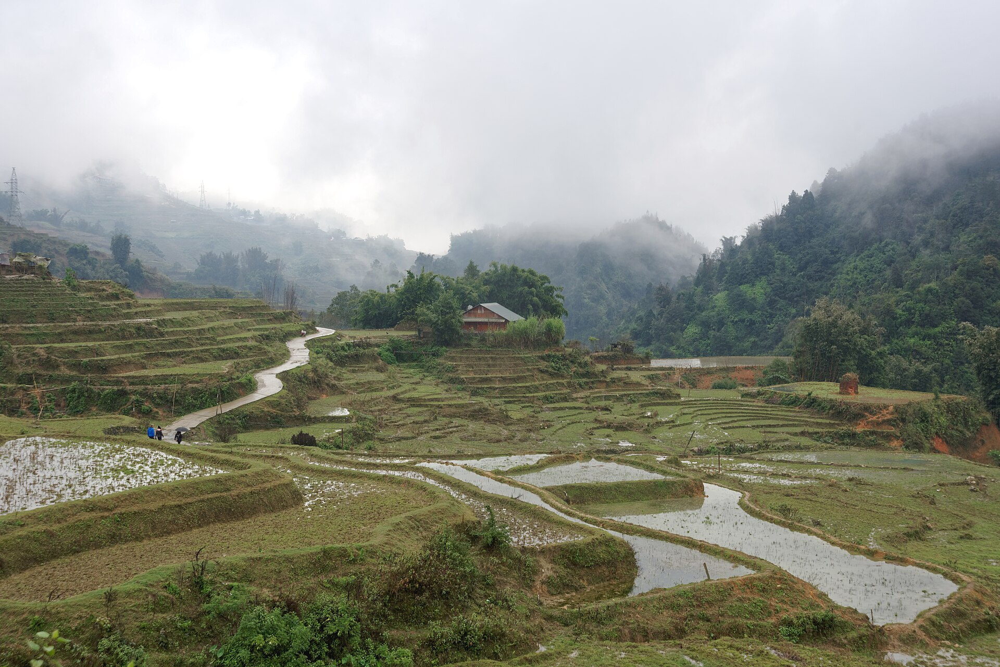

Day 06 · FRI 27 NOV
玻璃橋，然後落山
Cầu Kính Rồng Mây · Thác Bạc · Sa Pa → Hà Nội

包車一日掃西北邊三個點，夜晚喺鎮上直接上夜車返河內。行李下晝就要執好，唔好留到最後。
- 包車
- 8 小時 / 80 km
- 夜車
- 沙壩鎮 23:00 開
- 住宿
- 夜車上
- 07:00早餐、執行李Azure 06:30–09:00。大行李寄存酒店到 22:30，只帶隨身。
- 08:00司機接Klook 私人包車 8 小時 / 80 km，HK$113 起。
- 08:40銀瀑布（Thác Bạc）入場 20,000 VND，行 15 分鐘上頂。 地圖 ↗
- 09:50榮梅玻璃橋（Cầu Kính Rồng Mây）500,000 VND。海拔 2,200 m，升降機 5 分鐘。大風或落雨會停開。 地圖 ↗
- 11:30O Quy Ho 天門4D 公路最高點，望黃連山脈。 地圖 ↗
- 12:00天門午餐約 1 小時。
- 13:00回程可加 Tả Phìn（Red Dao 村），要加約 1 小時，時間夠先加。
- 16:00回鎮，沖涼、執最後行李16:00 係死線，唔好遲。
- 17:00最後晚餐
- 18:30夜市最後一圈星期五夜市 16:00–22:00。 地圖 ↗
- 20:30返酒店拎行李大箱唔好帶上車，車上冇位放。
- 22:40去上車點石教堂附近或者巴士公司辦事處，行 5–10 分鐘。早 20 分鐘到，車唔等人。
- 23:00夜車開Sapa Ethnic Travel Sleeper VIP 20，HK$113。翌日 05:00–05:30 到河內老城區。
玻璃橋可能閂咗2026 年 10 月 1 日起停開過，之後話重開，但多個 11 月更新話仍然關閉，未有重開日期。星期五朝早經酒店／官網確認，唔好當實有。後備：Love Waterfall（70,000 VND）、Tả Phìn。
夜車喺鎮上開唔使落老街，省返 30 km 山路同 1 個鐘。上車點訂完要 confirm 清楚地址，唔好靠司機打電話搵你。
16:00 係死線同司機預先講明 16:00 一定要返到鎮。超時每公里 15,000 VND，而且夜車 23:00 開，唔等人。
安全閥時間趕就砍銀瀑布（最細嗰個，25 分鐘）。玻璃橋同天門唔好砍，呢兩個係全日重點。23:20 VIP Cabin 未確認，唔好當 plan；後備 HK Buslines 23:30。